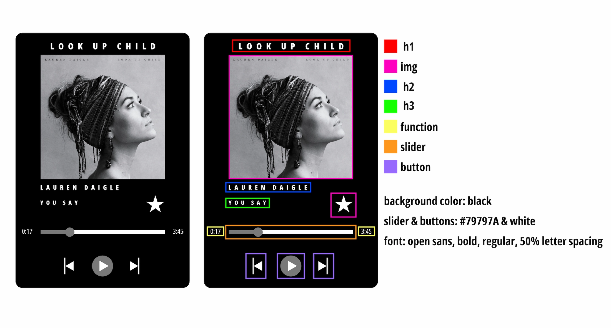

LAUREN DAIGLE
YOU SAY
Documentation
For my music play project, I did Lauren Daigle who is a Christian music artist. The song I chose is “You Say” from her album, Look Up Child. For my final project, I made some changes than what I had on my wireframes. These changes include the slider bar, I made it turn blue instead of grey when the music is playing. I also made the slider button blue. I chose blue because I felt like my project needed some color. I also wanted my audience to have a clear view on how long the music is playing. For my play, pause, and fast/backward buttons, I kept them all circular shape. I wanted a consistent layout. My star is also not pointy or sharp looking. I wanted my star to have a curvy shape to it. Overall, “You Say” is one my favorite songs that inspires me to keep on going. This song and artist shows me that God is real and he is always there lifting me up and giving me strength when I show weakness.
